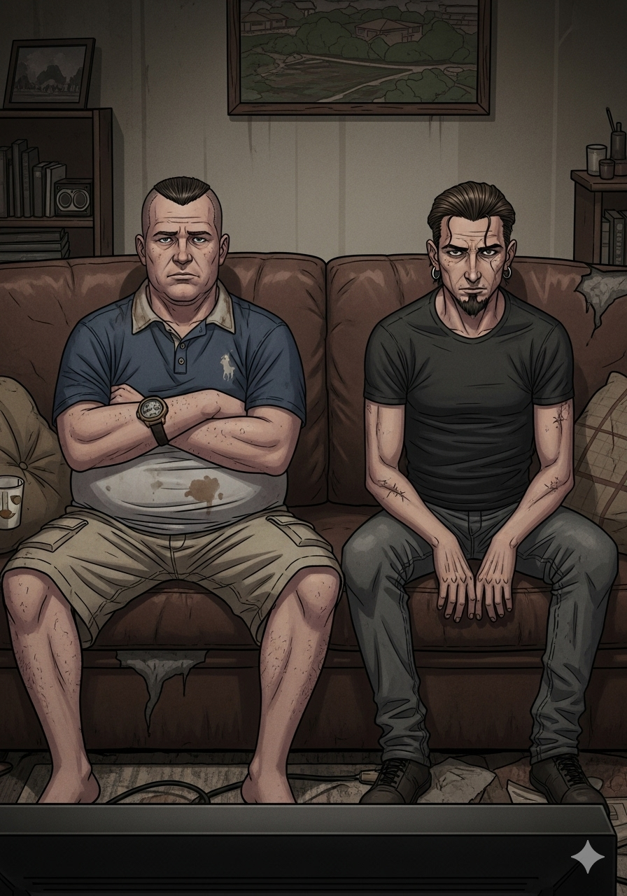
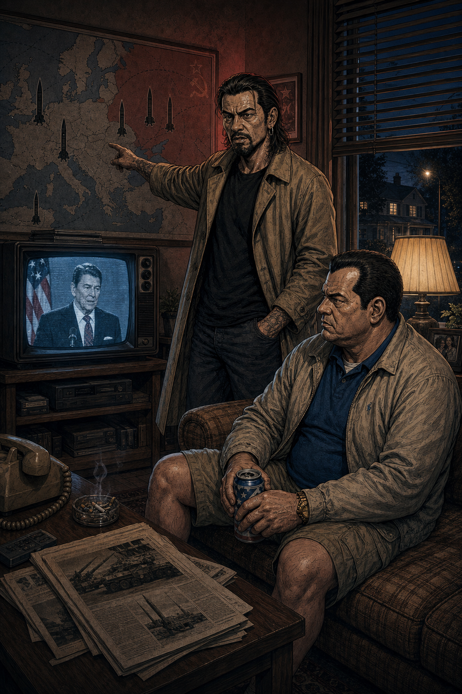
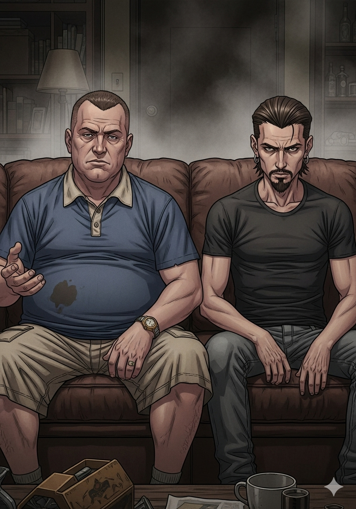
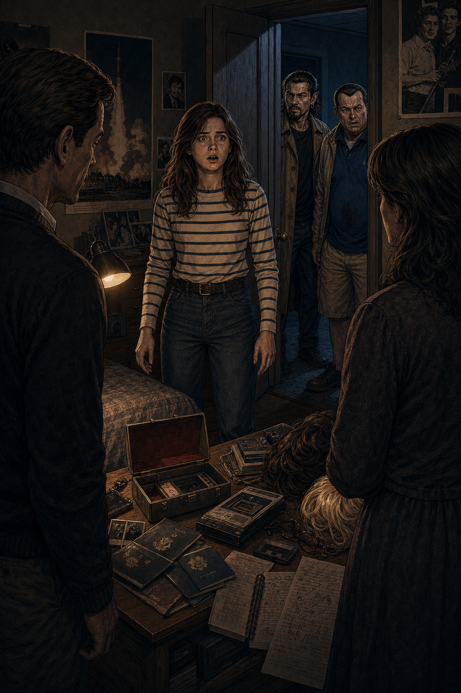
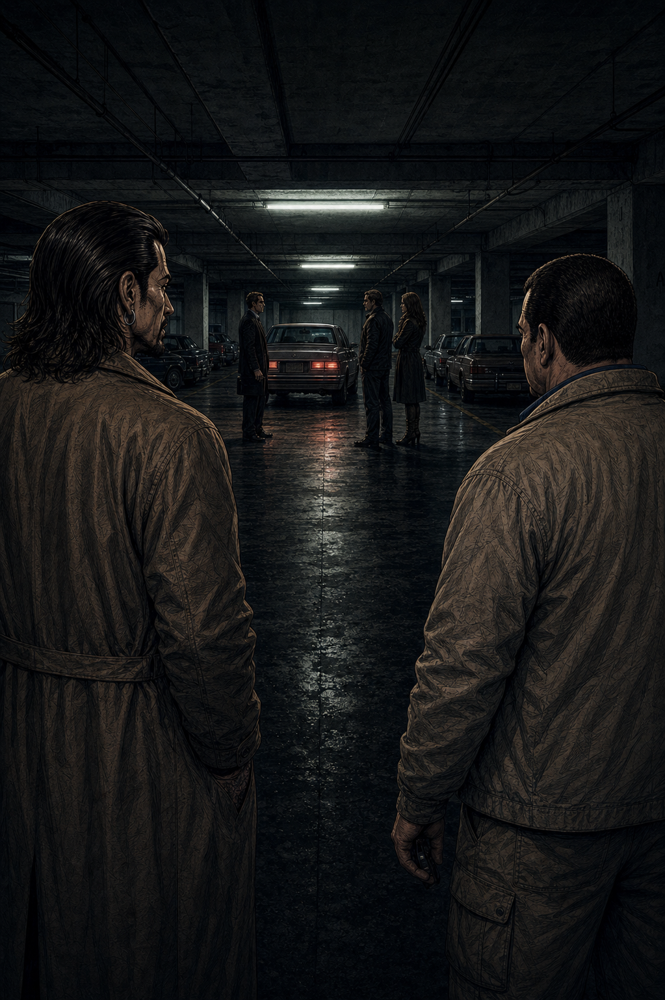

Escena 1 — El pitch

Washington D.C., 1981. Un matrimonio normal. Dos hijos. Un coche familiar. KGB.
RULO
"Toni, un matrimonio de agentes del KGB lleva años viviendo bajo cobertura en Washington. Tienen hijos, vecinos, van al súper. Y matan gente entre semana."
TONI
"¿Y nadie los descubre?"
RULO
"Su vecino es agente del FBI. Durante seis temporadas. Eso es The Americans."
Escena 2 — La doble vida

Philip y Elizabeth Jennings. Matrimonio. Padres. Espías. En ese orden o en cualquier otro.
RULO
"Matthew Rhys y Keri Russell. Philip y Elizabeth. Él lleva años viviendo en América y ya no sabe muy bien de qué lado está. Ella es pura convicción soviética, nunca duda."
TONI
"¿Y entre ellos qué hay? ¿Amor de verdad o cobertura?"
RULO
"Esa es la pregunta que te va a tener enganchado seis temporadas."
Escena 3 — Los años 80

RULO
"La ambientación es brutal. Era Reagan, Guerra Fría en su punto más caliente, misiles en Europa, Solidaridad en Polonia. La serie no es de fondo; la historia real ES la serie."
TONI
"¿Y hay pelucas? Porque espías años 80 sin pelucas es un fraude."
RULO
"Hay pelucas. Hay bigotes postizos. Hay disfraces que solo funcionan porque los llevan con una convicción absoluta."
¡KGB!
— Комитет государственной безопасности — 1954–1991 —
Escena 4 — Los giros

Un guion que no toma prisioneros. Ni favoritos.
RULO
"Los giros son brutales. Y lo más bestia es que no son de esos giros de impacto gratuito. Cada uno es consecuencia lógica de lo que llevas viendo. Lo ves venir y te duele igual."
TONI
"¿Tipo Breaking Bad?"
RULO
"Tipo Breaking Bad pero sin que nadie sea claramente el malo. Ni el bueno."
🇷🇺 KGB
Creen en lo que hacen. Sacrifican todo por una causa. No son caricaturas. Son personas con un sistema de valores que simplemente no es el tuyo.
🇺🇸 FBI
Defienden lo correcto. O eso creen. También mienten, también manipulan. La única diferencia es a quién le deben lealtad.
Escena 5 — Sin bandos

TONI
"Oye, Rulo. Estoy... estoy de parte de los espías rusos. ¿Eso es malo?"
RULO
"Bienvenido a The Americans. Aquí no hay bando fácil. Aquí solo hay personas con sus razones. Y eso es muchísimo más incómodo que tener un héroe."
Aquí ni los buenos son tan buenos ni los malos tan malos. Y eso lo cambia todo.
Escena 6 — Stan Beeman

TONI
"¡RULO! ¡El vecino es del FBI y les invita a cenar! ¡Se hacen amigos! ¡Los Jennings tienen que sentarse a cenar con el tío que los persigue!"
STAN BEEMAN
"Noah Emmerich. El mejor personaje secundario que ha dado el espionaje en televisión. Y no lo sabe."
La cena más incómoda de la historia de la televisión. Repetida durante seis temporadas.
Escena 7 — La tensión constante

RULO
"El ritmo no es vertiginoso. Pero la tensión nunca desaparece. Siempre está ahí, debajo de todo: la posibilidad de que los descubran. En cada conversación con el vecino. En cada mirada."
TONI
"Es que incluso cuando no pasa nada, parece que va a pasar algo."
RULO
"Eso es escritura de primer nivel. Crear tensión sin acción. Solo con lo que sabes tú como espectador."
"Seguramente sea la mejor serie
de espionaje que hay."
— Pachi. Y tiene razón.
Escena 8 — Los gadgets y disfraces

RULO
"Y no te creas que es solo drama existencial. Hay gadgets de los 80, micrófonos en embajadas, documentos robados, seducciones de manual de espionaje y persecuciones que te ponen a cien."
TONI
"¿Mejor que James Bond?"
RULO
"James Bond es una fantasía. Esto parece real. Y asusta más."
¡PELUCA!
— El arma más letal del KGB en suelo americano —
Escena 9 — Paige

Paige Jennings. Hija. Adolescente. La que descubre que sus padres no son quienes dicen ser.
TONI
"Rulo. La hija lo descubre. Lo descubre TODO. Y ahora los padres tienen que decidir qué hacer con eso."
RULO
"Ahí la serie se convierte en otra cosa. Porque ya no es solo: ¿los pillarán? Ahora es: ¿qué le hacen a su propia hija? ¿La protegen? ¿La usan? ¿Las dos cosas?"
Holly Taylor como Paige. La línea roja que la serie cruzó sin miedo.
Escena 10 — El final de temporada

TONI
"Rulo. Cada final de temporada me deja roto. Y luego arranca la siguiente y tardas un episodio en estar completamente dentro otra vez."
RULO
"Eso es una serie que sabe exactamente lo que hace. Que confía en el espectador. Que no explica de más ni subraya las emociones. Las deja ahí y te deja que las proceses."
Seis temporadas. Setenta y cinco episodios. Zero episodios de relleno.
Escena 11 — El veredicto

Después de seis años. Dos espías. Una Guerra Fría. Y una respuesta.
RULO
"Ambientación brutal, protagonistas que se salen, giros que duelen, tensión constante sin ritmo vertiginoso, gadgets, disfraces, persecuciones. Todo. Y un final que te lo da todo sin hacerte ningún regalo fácil."
TONI
"¿La mejor de espionaje que hay?"
RULO
"La mejor de espionaje que hay. Sin discusión."
🕵️ Veredicto de Rulo y Toni 🕵️
9.5
LA MEJOR SERIE DE ESPIONAJE
QUE SE HA HECHO
Seis temporadas sin un episodio de relleno. Una pareja protagonista que define lo que es actuar de verdad.
Un guion que no toma bandos porque sabe que los bandos son mentira. Tensión permanente sin necesidad
de explosiones cada cinco minutos. Y un final que te cierra todo sin hacerte el favor de ponérselo fácil.
Si no la has visto, para. Ve ahora. El resto de la lista puede esperar.
Espionaje
Drama
FX · 2013–2018
6 temporadas
Keri Russell
Matthew Rhys
Noah Emmerich
Guerra Fría